Student ved HVL
Jeg vil prate litt om bokuniverset "Cosmere"
Oppbygnningen av universet i the cosmere, skjer via fortellinger fra hovedsakelig en bok-serie fra hver planet. På de forskjellige planetene har man et slags magisystem som kommer fra en tidligere naturkraft/kilde eller en gud. Denne guden ble drept før noen av de bøkene man leser skjer i bokuniversets tidsberegning. Guden etterlot seg hovedsakelig 16 kilder navngitt "shards" som gir eieren/brukeren av kraften gudlike krefter. Hver "shard" i seg selv har som oftest en motkraft eller to aspekter ved seg, man finner ofte "preservation" altså bevaring på samme planet som man finner "ruin" ødeleggelse, som sammen lagde en planet med beboere, liv og økosystem. Disse gudene påvirker planetene sine mer enn med bare selve danningen av planeten, de påvirker også hvordan magien eller mer magi energien "investiture" viser seg på planeten. På planeten skapt av ruin og preservation så har man noen metaller som er katalysen for magi bruken på planeten. Hvis du er født med evnen til å "brenne" jern eller stål, får du da evnen til å dytte eller trekke til seg andre metaller rundt seg, litt likt som telikinese. Dette er planeten scadrial.
En gammel planet kalt "Threnody" sin effekt på magien kommer via "shades", skygger, som oppstår etter en person dør på et spesifikt vis. Denne skyggen er i seg selv som regel harmløs med mindre den blir forstyrret for mye av lyd eller av synet på blod. Tar en av disse skyggene på deg er eneste kuren malt sølv. Etterhvert som denne planeten døde, flyttet beboerne seg til en annen planet hvor det finnes edle steiner som brukes som en energikilde, denne energien er fornybar hvis man vet hvordan man utfører det, steinene blir som et slags batteri for å holde på energien til sola.
Etterhvert som romfaring og slikt utvikler seg kommer det styrker fra forskjellige steder i universet som prøver å okkupere handelsruter og andre planeter sine versjoner av "investiture". Så mordet på den ene guden flere 1000 +- år siden, ledet til en lang og voldsom krig.
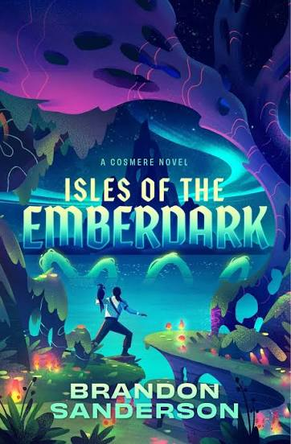
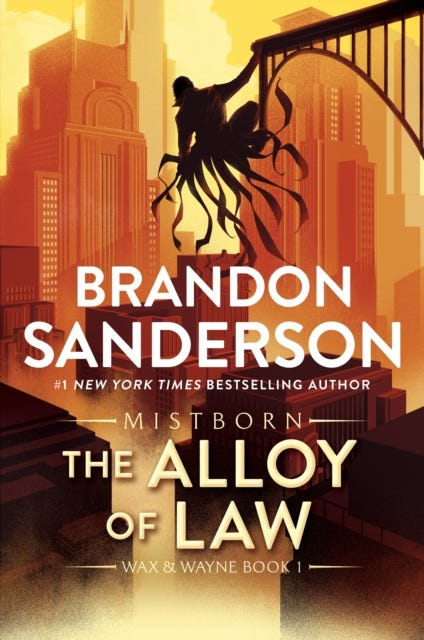
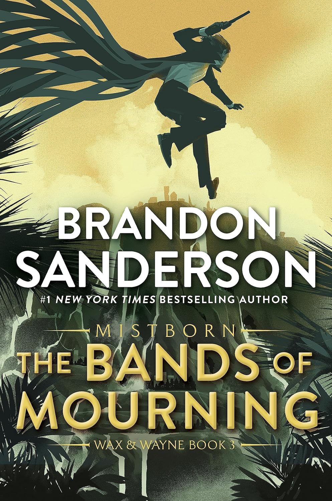
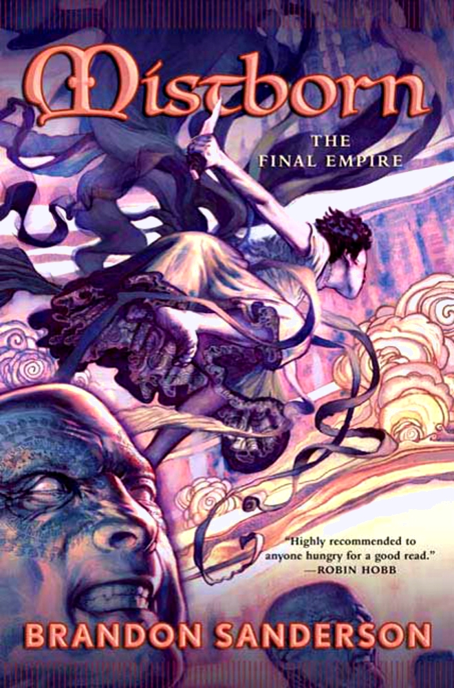
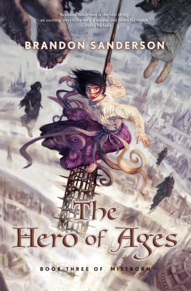
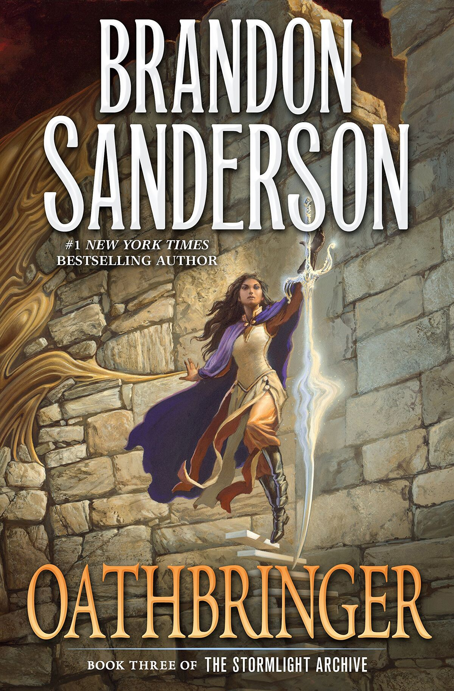
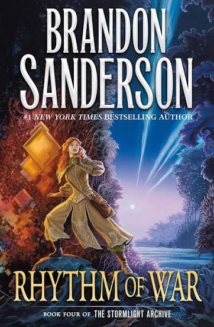
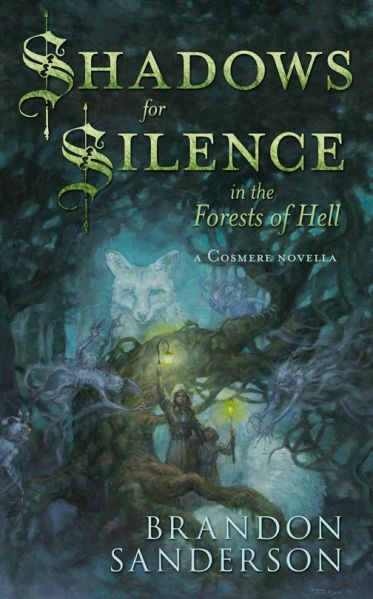
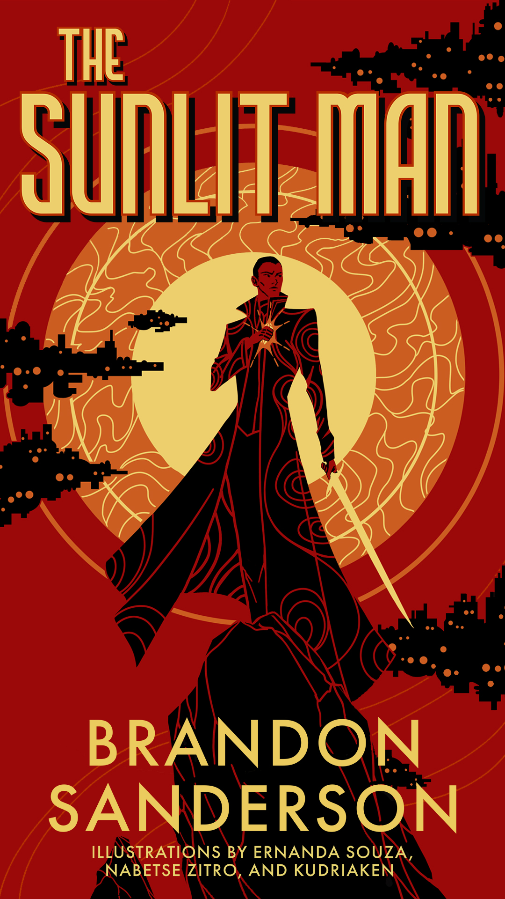
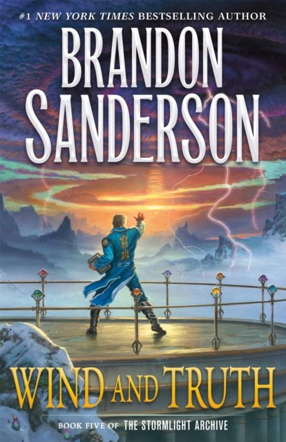
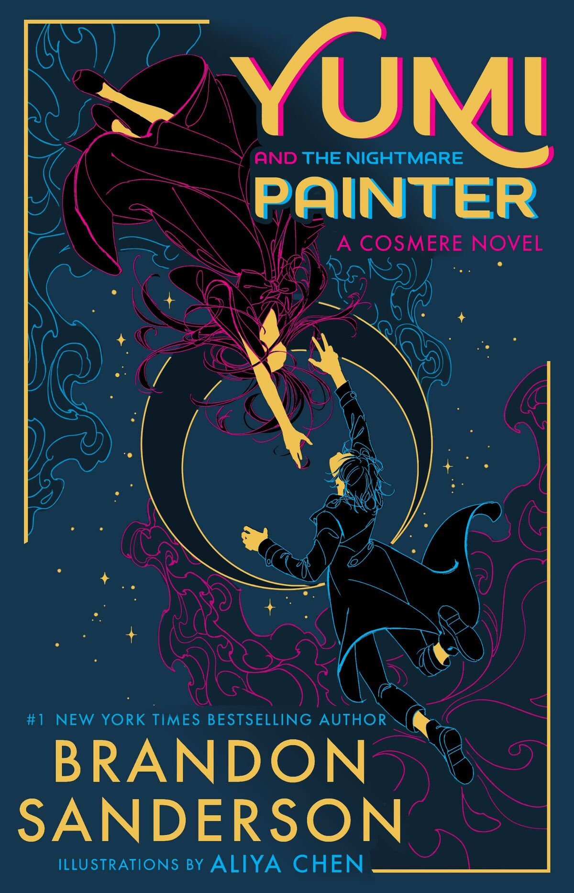
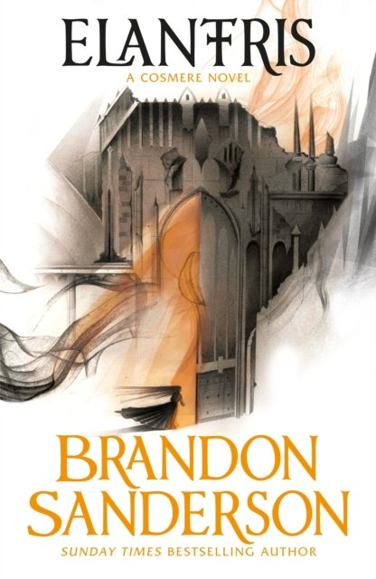
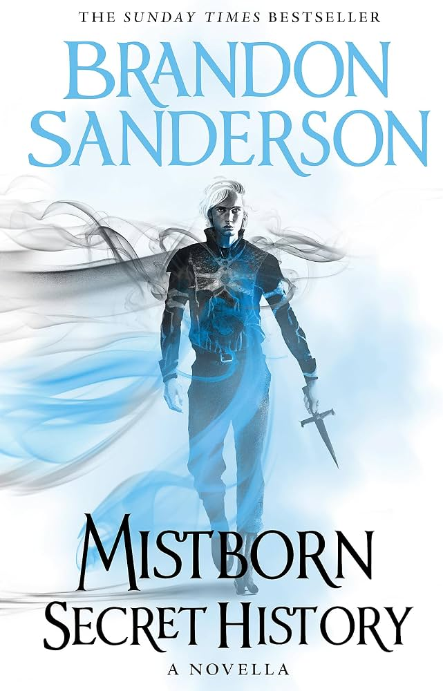
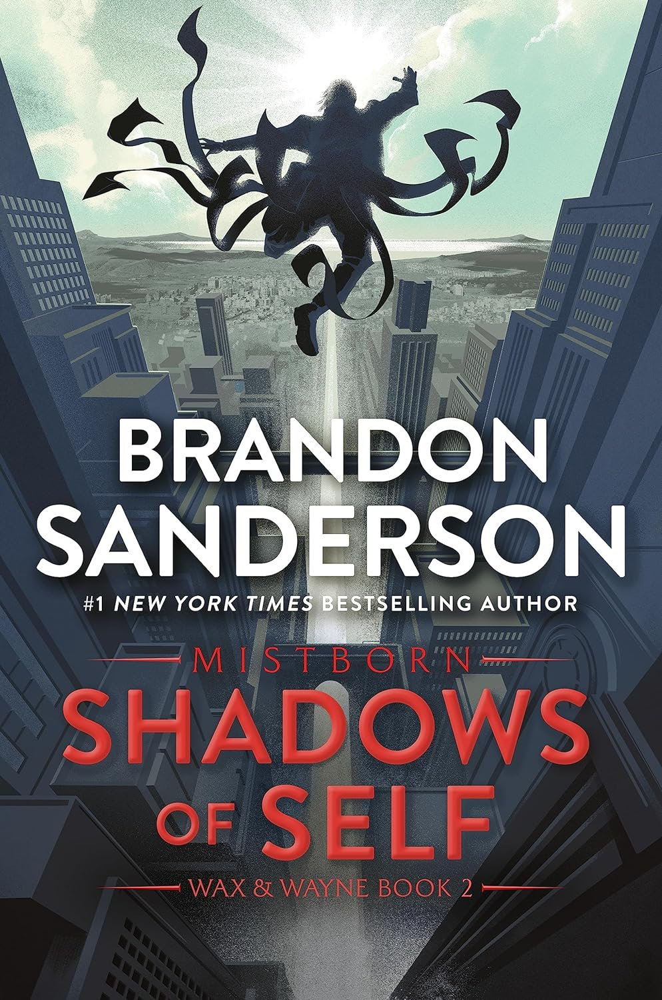
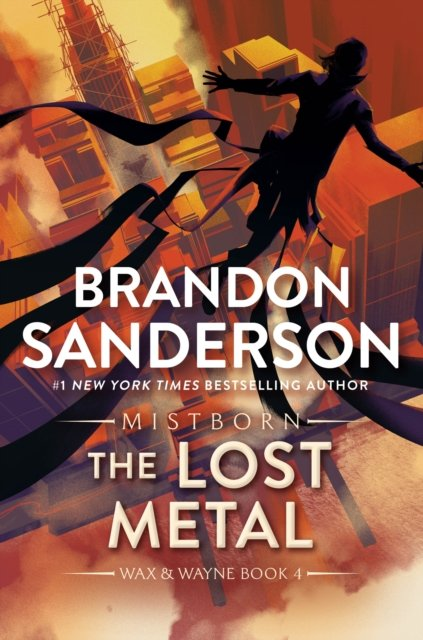
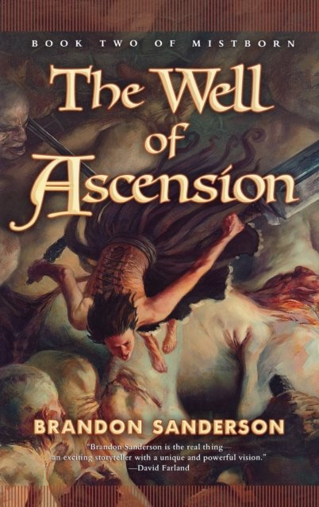
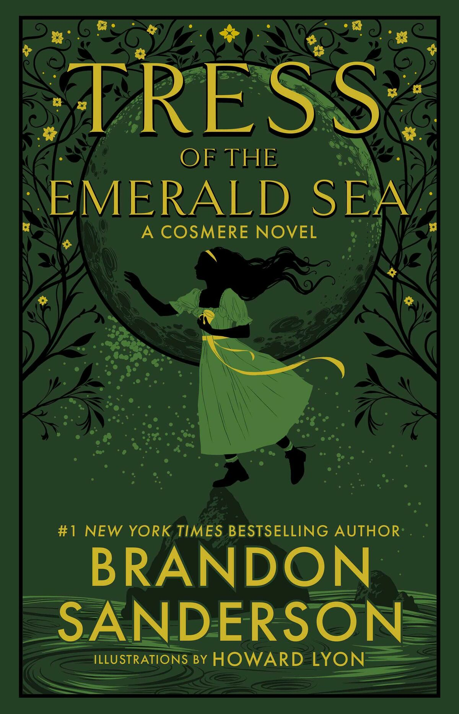
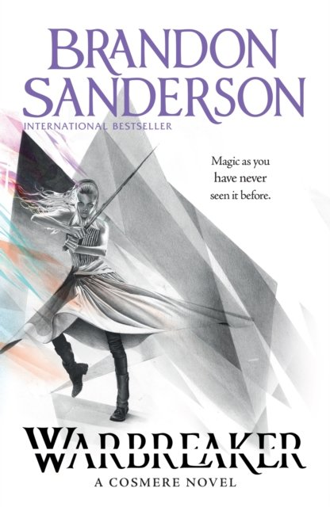
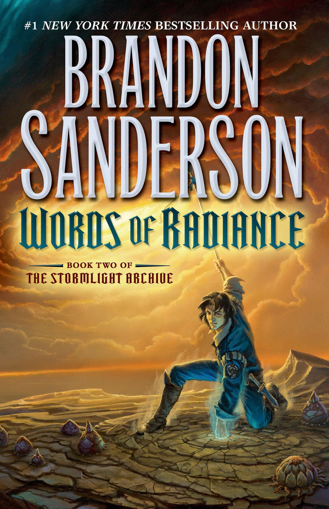
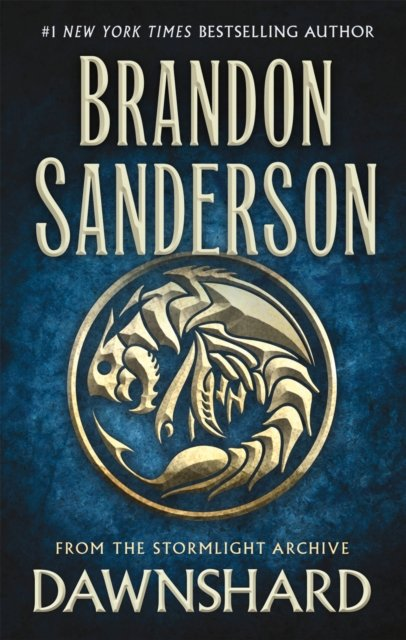
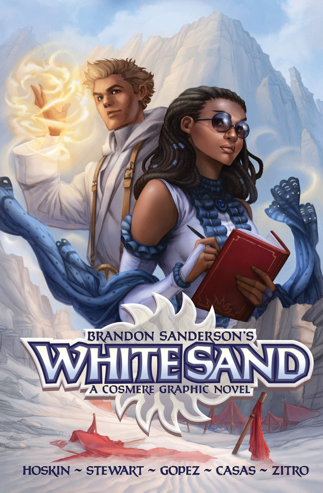
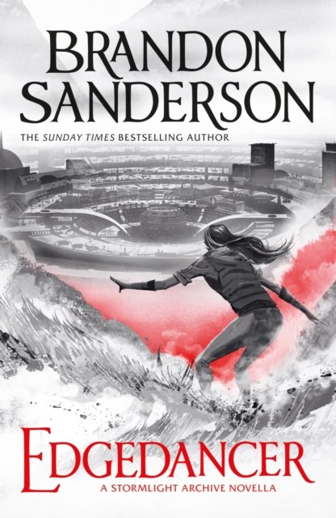
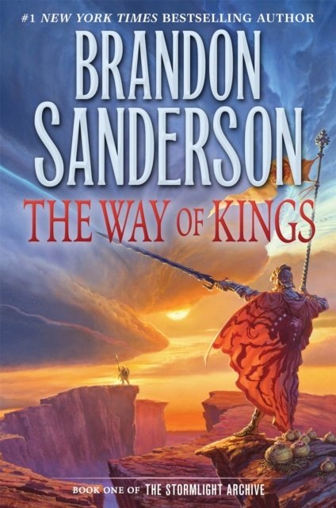
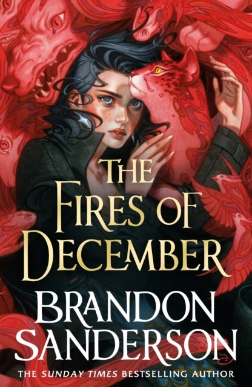